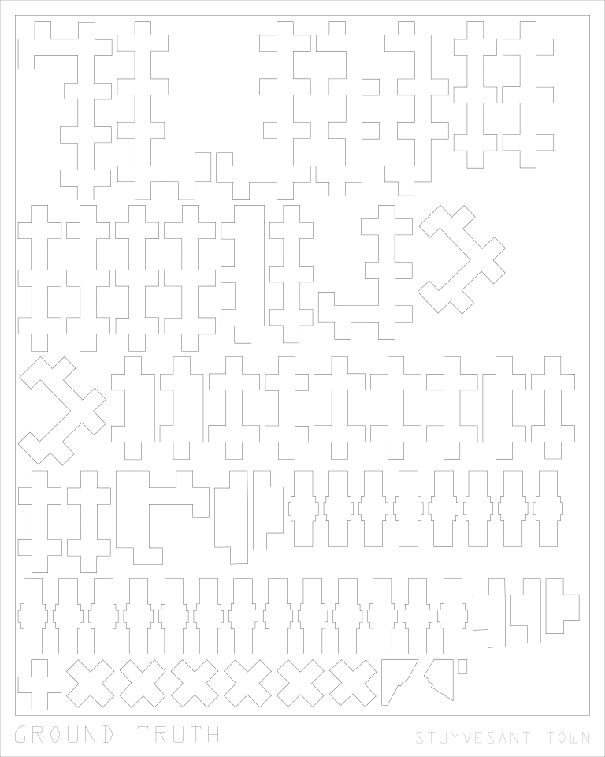

About My Art
I create art by writing code. This kind of art used to be called "generative" but in recent years that phrase has become too closely associated with "gen AI art", which is a world I stay far far away from. These days I like the term "procedural art", because it gets closer to what I have always found interesting about art-producing code in the first place.
Sol LeWitt once described conceptual art as art in which "The idea becomes a machine that makes the art". In his wall drawings, he would write a detailed set of instructions and then leave the execution to a team of hired draftspeople. Many of these instructions left no room for interpretation, others reflected features of the room in which they were executed, and others still embraced randomness or the compounding of small variations in starting conditions. In all cases, the "output" of these instructions were what was on display, but the "art" itself was the instructions.
I like to think of my procedural art as continuing in this tradition. The outputs are manifestations of the core idea, and that idea—that process or way of processing the world—is what I find interesting. The same code can be run over and over again with different parameters or random seeds and produce different outputs, but the idea remains visible throughout.
Oxbow Lakes
One day a phrase popped into my head unbeckoned and absent any context. Somewhere out of the deep recesses of my mind the word "oxbow lake" dug its way out from where it had lodged itself many years ago during one of my ecology classes. The two words wouldn't leave me alone until I rediscovered what they meant and that path led me to this piece.
Rivers are always moving, and not just the water inside them but their paths themselves. As they erode the land around them, small wobbles in their courses become exaggerated by the momentum of the water tracing those curves. Fluvial geomorphologists call this process "meandering", and when a river meanders so much that the curves of its path meet back on themselves, the water takes the path of least resistance and "cuts off" the longer bend. In many cases these cut-off bends become lakes in their own right, and these crescent-shaped lakes are called "oxbow lakes".
This piece is a simulation of that meandering process, based off of the paper "Sufficient Conditions for River Meandering: A Simulation Approach" by Howard & Knuston. Each iteration of the simulation is drawn on top of the previous. Over the many years represented you can see the chaos and the order of the river's path and the cut-offs that it leaves in its wake, many of which would likely become oxbow lakes.


True North
A great many things about the world that seem simple on their face are really just complex things waiting to be better understood. Take something as simple as the concept of "north". In practice, there are three distinct "norths" worth defining: magnetic north (where your dollar-store compass will point), grid north (the direction of the vertical lines on most maps), and true north (the direction that points to the axis of Earth's rotation).
However, the "north" we interact with day-to-day in New York City is none of the above, because the street grid of Manhattan is rotated 29 degrees off of true north. The difference between "street North" and "true north" is what this piece is about. For each iteration, the buildings of Manhattan are drawn once with the street grid pointed up and once with true north pointed up, with the rotation centered on the coordinates given in the bottom right.
Of course the "lie" of "street north" is a convenient one. It is a shortcut that allows us to navigate the city. But it is worth considering how many of the things we take for granted are just as much of a shortcut as this is.


Ground Truth (work in progress)
TODO
Delauney Circles
TODO
Cubic Easing
TODO